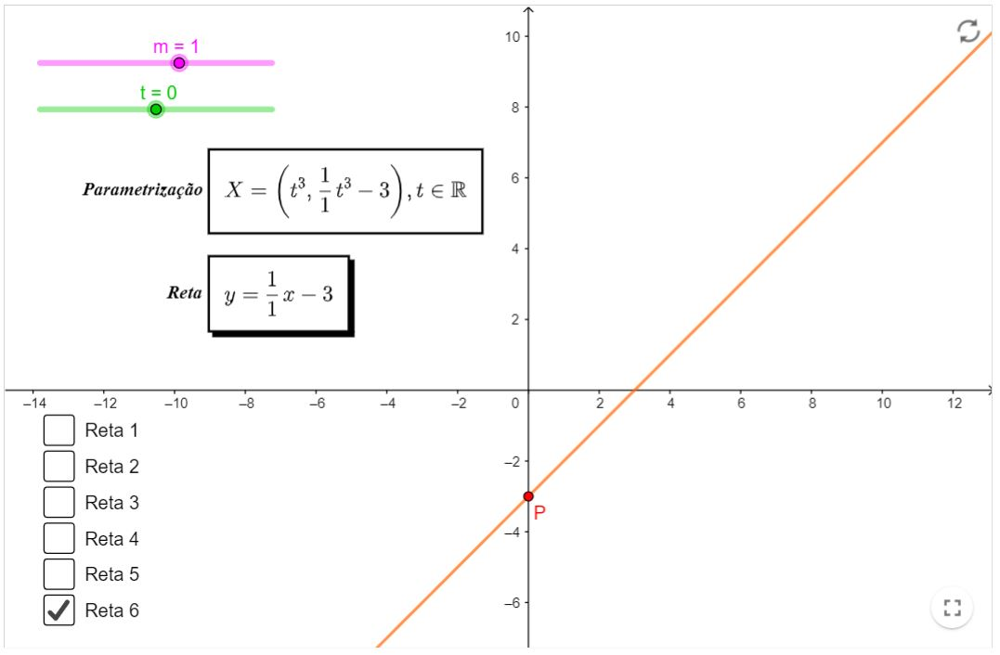
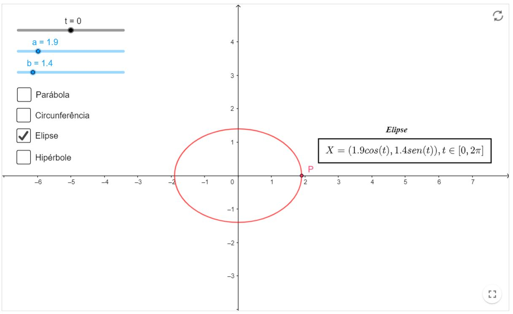
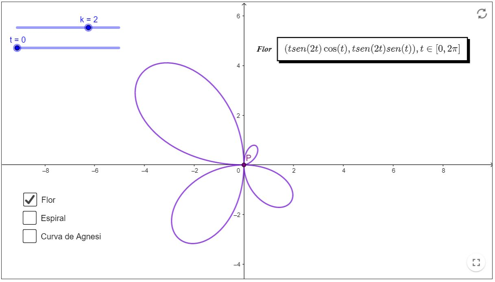

Revisão de Geometria Analítica
Curvas paramétricas no plano
Retas
Neste tópico, vamos ver algumas retas paramétricas. Note que, para cada reta, haverá uma parametrização e a forma cartesiana da mesma.
- O coeficiente angular $m$ estará disponível para alteração, basta arrastá-lo até o valor desejado. (Observe a mudança da reta com respeito à variação dele)
- Você também poderá variar o $t$ e assim, ver a trajetória do ponto $P$.
- Clique na caixa para fazer aparecer/desaparecer a reta desejada. Sugerimos não clicar em várias a mesmo tempo, por uma questão de poluição visual.
- Curiosidade: você seria capaz de dizer qual a equação cartesiana associada à reta paramétrica $X=(k t, k t), t \in \mathbb{R}$, onde $k \in \mathbb{R}$ ?
Cônicas
Neste tópico, teremos exemplos de curvas paramétricas, mais especificamente, cônicas. Com o parâmetro $k \in[-2 \pi, 2 \pi]$, é possível obter a trajetórias do ponto $P$ sobre suas curvas associadas. Com os parâmetros $a$ e $b$, é possível fazer alterações nas curvas, sem mudar suas respectivas naturezas. É interessante que o aluno veja este tópico depois de passar pelo capítulo de Cônicas, para que este sirva como uma revisão apenas.
- Curiosidade: mude os parâmetros $a$ e $b$ e veja o que acontece com a elipse.
- Aperte nas caixas para fazer aparecer/desaparecer a curva desejada. Sugerimos não apertar mais de uma por vez, por uma questão de melhor visualização.
Arco de cicloide
Chama-se arco de cicloide a curva definida por um ponto de uma circunferência que rola sem deslizar sobre uma reta, até que esse ponto chegue na posição da qual partiu. As equações paramétricas desse arco são: $$ \begin{aligned} &x=r(\theta-\operatorname{sen}(\theta)) \\ &y=r(1-\cos (\theta)) \end{aligned} $$ Onde $r>0$ é o raio da circunferência e $\theta \in[0,2 \pi]$. Abaixo, você encontra um exemplo de arco de cicloide, considerando uma circunferência com $r=1$. Varie $\theta$ e observe a trajetória de $P$.
Outras curvas
Nesta seção, teremos alguns exemplos de curvas paramétricas. Para visualizá-las (ou deixar de visualizá-las), basta clicar na caixa correspondente à curva desejada. Temos um parâmetro $t$ na tela, o qual você pode mudar arrastando o ponto deslizante e assim, você será capaz de observar as trajetórias do ponto $P$ em cada caso.
Recursos computacionais
Retas
Livro Geogebra

Cônicas
Livro Geogebra

Arco de cicloide
Livro Geogebra
Outras curvas
Livro Geogebra
